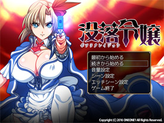
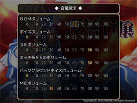
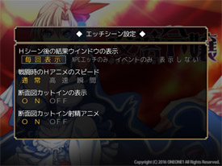

＜タイトル画面時の操作＞
|  |
①最初から始める ゲームを最初から始めることが出来ます。 ②続きから始める 今までにセーブした場面からプレイ出来ます。 ③音量設定 ※下記に詳細があります。 ④シーン設定 ※下記に詳細があります。 ⑤エッチシーン設定 ※下記に詳細があります。 ⑥ゲーム終了 ゲームを終了してＷｉｎｄｏｗｓに戻ります。 |
＜音量設定＞
|  |
※０の場合は再生しません ①BGMボリューム BGMの音量を調整します ②ボイスボリューム ボイスの音量を調整します ③SEボリューム SEの音量を調整します ④エッチ系SEのボリューム 射精音や挿入音などのSEの音量を調整します ⑤バックグラウンドボイスボリューム バックグラウンドボイスの音量を調整します ⑥MEボリューム 戦闘終了後や宿屋で鳴る音の音量を調整します |
＜シーン設定＞
 |
①メッセージ表示速度 メッセージの表示速度を調整します ②自動改ページ待ち時間 オートモード時の文字送り時間を調整します ③画像の表示・演出 CGの表示までの時間などを調整します ④一度見たHシーンのスキップ オンでスキップするかどうかの選択肢を表示します ⑤移動時の設定 常時ダッシュの場合、 shiftを押してある間は通常移動になります。 ⑥イベント戦闘時 自動敗北モードの設定 イベントで敗北分岐のある戦闘の場合、 選択：選択肢で敗北するかどうか選べます。 自動：自動的に敗北したことになります。 |
＜エッチシーン設定＞
|  |
①Hシーン後の結果ウインドウの表示 Hシーン終了後に出る結果ウインドウの表示を調整します ②戦闘時のHアニメのスピード Hアニメの速度です。 瞬間の場合は表示しません ③断面図カットインの表示 断面図のカットインの表示を調整します ④断面図カットインアニメ射精 特定シーンで射精時に断面図のアニメーションの 表示の有無を調整します ※断面図カットインの表示がOFFでも、こちらをOFFにしないと表示されます。 |